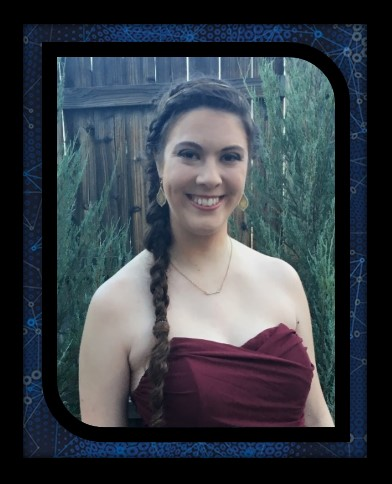

Priscilla Short's Portfolio

About me:
Growing up I was home schooled, but I never received an official diploma.
I held a full-time job at a Christian ministry for over 3 years from the time I was 17 till the time I was 21.
During which time my mother passed away on my 20th birthday.
After my time at the ministry I took the GED test and passed to graduate from high school officially.
A couple weeks after getting my GED I went on a mission's trip to Honduras.
About a week after getting back from Honduras I was hired by a tech support company here in Bend called Paladin Data Corp.
I worked there full time for 2.5 years.
I left to get a higher education and I have now completed the 1st year of an Associate's in Computer Science at Central Oregon Community College.
After a year in school, my finances required that I work part time while completing my second year of school.
I am now a software developer at Paladin Data Corp working 30 hours per week.
I have been working as a developer for 6 months and I have been in the field for about 4 years.
I have rather big goals.
After working in tech support and during my time working for a ministry, I discovered a strong interest in software development.
I very much enjoy learning and using programming languages. This has led to my current career in software development.
I plan to finish an Associate's degree (and someday a bachelors) in Computer Science.
I also have a strong interest in neurology and anything to do with the brain.
My ultimate goal is to be a software developer in the field of neuroscience.
My commitment to software development is strong.
I have taught myself the programming languages of Visual Basic and SQL script.
Through work and school, I have learned C#, C++, Python, CSS, and HTML.
I have spent many late nights at work off the clock learning these languages to someday do the work I love in computer programming.